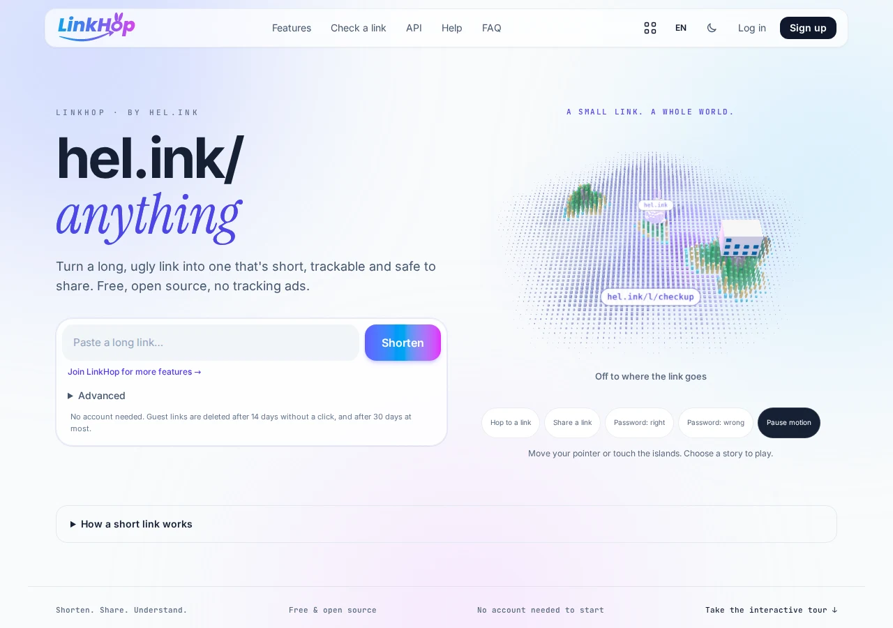
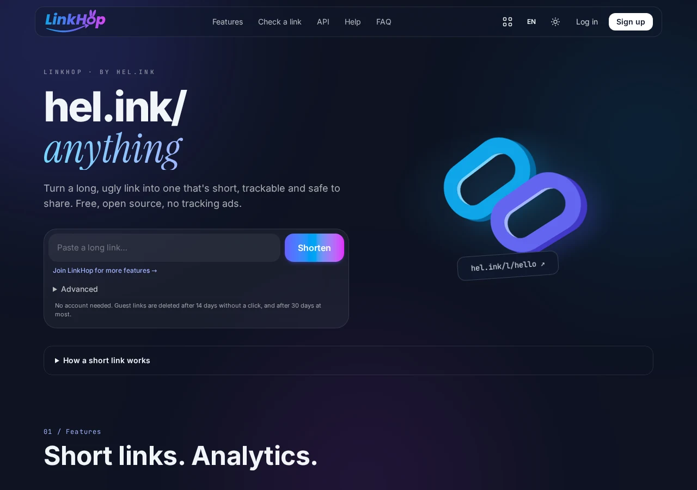

HOP · HOP 短縮 URL サービス
短縮 URL、QR コード、そしてクリック解析。
リンクを短縮し、すべてのクリックを記録。国別・端末別にアクセスを分析し、自動脅威検知で安全を確保します。
MIT ライセンスの無料オープンソース。リンクインバイオをお探しですか？ BioHop をご覧ください。
主な機能
- 超高速な短縮リンク
カスタムの分かりやすいスラッグやランダム ID を hel.ink/l/{slug} で即座にリダイレクト。
- ダイナミック QR コード
印刷物やデジタル共有に適した高解像度 SVG/PNG QR コードを生成。
- 詳細なアクセス解析
訪問者の国（GeoIP）、デバイス、ブラウザ、OS、リファラーをリアルタイムで追跡。
- 自動脅威検知
hop/safety と共有ドメインブラックリストによる能動的スキャンで安全性を維持。
- きめ細かなリンク制御
有効期限、最大クリック数、パスワード保護を設定可能。
- フォルダとタグ管理
フォルダ分けとキャンペーンタグで多数のリンクをすっきり整理。
- HOP ID シングルサインオン
中央の HOP ID でログイン。複数アカウントの管理は不要です。
- 開発者向け REST API
プログラムからのリンク作成や監視を可能にするスコープ付き API トークン。
独自の LinkHop を構築する
MIT ライセンスの無料オープンソース。リンクインバイオをお探しですか？ BioHop をご覧ください。
LinkHop


よくある質問
以前のリンクインバイオ機能はどうなりましたか？
バイオページ機能は独立した専用アプリ BioHop (bio.hel.ink) へ移行しました。従来のリンクも自動転送されます。
好きな文字列で短縮 URL を作れますか？
はい、ログインユーザーは空いている任意のカスタムスラッグを指定できます。
アクセス解析のプライバシーは守られていますか？
個人を特定する生のログは保持せず集計値のみを記録し、定期的に古いログを安全にパージしています。
LinkHop はオープンソースですか？
はい、LinkHop は MIT ライセンスのもとで自由に利用およびセルフホスト可能です。
HOP ファミリー
LinkHop はセルフホスト可能なオープンソース Web ツール群 HOP の一部です。
| アプリ | 役割 | 公開アドレス | ソースコード |
|---|---|---|---|
| HOP ID | アカウントポータル、HOP ID ログイン | hel.ink · hub.hel.ink | navi-crwn/HEL.ink |
| LinkHop | 短縮 URL、QR コード & クリック解析 | link.hel.ink · hel.ink/l/{slug} | このリポジトリ |
| BioHop | リンクインバイオとテーマ | bio.hel.ink · hel.ink/b/{slug} | navi-crwn/BioHop |
| PixelHop | 画像およびメディア配信 | pixel.hel.ink · p.hel.ink | navi-crwn/PixelHop |
| NoteHop | クライアント暗号化プライベートノート | note.hel.ink · n.hel.ink | navi-crwn/NoteHop |
ヘルプとサポート
バグの報告やサポートが必要ですか？ 次の場所で Issue を開いてください： GitHub Issues またはプルリクエストを送信してください。